把实际内页，与本刊内容放在一起看
12张参考卡，正式采用19张实际图片。每张标明看到的范围、可借的机制、内容配对与缺项。图像均来自公开来源，本轮未生成新图。
这些是待审的设计输入。没有完整取得任何一刊，也没有据此确定小黑书的主题、页数或全刊版式。英文预览不等于中文排版验证。
增长模型参考适配未成立，R01配对已否决；其他候选不自动递补。Founder Communication的R10／R11、开场R09等仍是待审提案，需要先验证内容关系与视觉成立条件。R06依赖尚未取得的人物材料。
A24 Tax Season｜地理条目与地图共同成立
增长模型配对已否决；参考保留，尚无通过适配判断的本刊内容
A24 Zine Issue 18 · Tax Season
实际查看范围：印刷页10–11，单个完整跨页；不是完整刊物
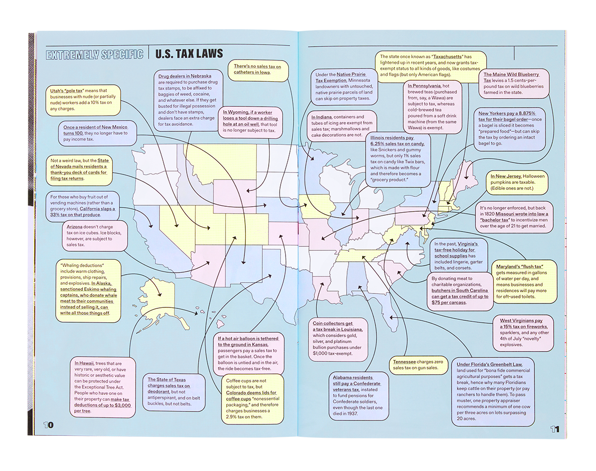
限制：公开网页和若干选页预览；本轮未取得整刊文件
- 实际看到什么
- 同一美国地图横跨两页；大量长短不一的地方税务条目环绕地图，引线各自落到具体位置。小标题给整幅内容命名，浅色条目和地图区域穿插，细线贯穿全幅。
- 视觉机制
- 从可见页面判断：地理位置就是信息关系，地图同时是查找结构和强视觉中心。长短不同的具体条目带来疏密节奏，曲线让视线在地点与文字间往返；稀奇的具体内容支撑逐条发现的阅读乐趣。浅色和统一线条帮助密集内容保持可读。以上是版面分析，不冒充设计师自述。
- 对应的真实内容与素材
- 当前没有核验到适合这张版式的本刊内容包。仅有全球增长主题或国家名称不足以支持地图；若将来找到真实地点、各地具体差异与足够条目，才重新评估。不得为保留版式而编造内容。
- 具体转译提案
- 撤回将地图替换为三结果、再把六因子装入气泡的提案。增长模型只有概念分组，缺少这张版式所依赖的空间对象、可定位条目和足够的具体细节；改变这三项便改变了原版式成立的原因。不得仅凭同属图解而继续套用。
- 版面与阅读关系
- 地图的形状、条目长度和指向位置共同决定布局。不能抽成三组均匀的层级图，也不能以大标题与少量卡片取代原有内容密度后仍声称继承其效果。
- 字体、颜色与中文适配
- 浅蓝、浅黄、粉紫和细轮廓服务于原有的地图与密集条目；这些外观单独移植不能恢复原页品质。不据此锁定本刊颜色、字号或卡片样式。
- 前后页关系提案
- 未确定本刊落点，不再绑定模型、五种选择开场或渠道任务。
- 不适配与不能借用
- 参考本身保留；R01到增长模型的配对与跨页试样已被用户否决。不是等开本或字号确认后即可用的方案，不继续对失败试样作装饰修补。
- 制作前缺项
- 缺少内容与空间对象的一一对应、具体条目及图像本体；未具备适配条件。增长模型需要重新寻找结构合适的参考。
- 验收要看什么
- 使用前先证明：原页为何如此组织、核心视觉怎样承载内容、本刊真实材料能否保留该关系和信息密度；任一项不成立即不选用。
用户已否决模型配对／参考保留／本刊适配未成立
返回索引 ↑A24 Tax Season｜从读者处境进入分支
辅助机制；不能直接作完整诊断版式
A24 Zine Issue 18 · Tax Season
实际查看范围：印刷页24–25；分支向页外延伸，后续未取得
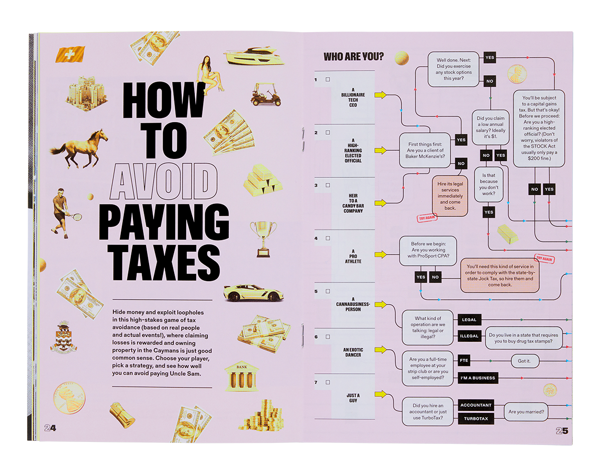
限制：公开网页和若干选页预览；本轮未取得整刊文件
- 实际看到什么
- 粉色跨页左侧大标题与金色剪贴，右侧从人物身份开始分支，线条延伸到页外。
- 视觉机制
- 从读者处境进入，再逐条寻找判断；标题和路径形成大尺度差。
- 对应的真实内容与素材
- 基础稿已有情境与工作表；没有完整条件树、经验证的问卷或评分阈值。
- 具体转译提案
- 入口可改为稿中三类症状：没有被理解、有兴趣却有顾虑、觉得不错却不改变选择。只借多入口，不把症状互斥化，不编自动诊断。
- 版面与阅读关系
- 每个入口通向要检查的证据，保留同时发生和返回的可能。不用1/2/3站点表示三结果的必经顺序。
- 字体、颜色与中文适配
- 可借标题和小标签的反差；金色钱币来自税务主题，不能成为无语义的增长装饰。中文长问句须另配节点宽度。
- 前后页关系提案
- 入口之后必须解释模型限制，不先给测试得分。
- 不适配与不能借用
- 原页是游戏化税务编辑，当前只看到开端；不能宣称完整玩法已读。它不证明商业诊断有效。
- 制作前缺项
- 分支条件、终点与回返逻辑未被来源完整支持，因此不作主参考。
- 验收要看什么
- 每条yes/no都有依据；缺条件则取消分支；没有增长得分、等级或保证。
已看图／局部适配／完整流程不可制作
返回索引 ↑A24 Tax Season｜姓名、条目和旁注的资料页
可优先讨论：文字主导的多主体页
A24 Zine Issue 18 · Tax Season
实际查看范围：印刷页14–15，单个完整跨页
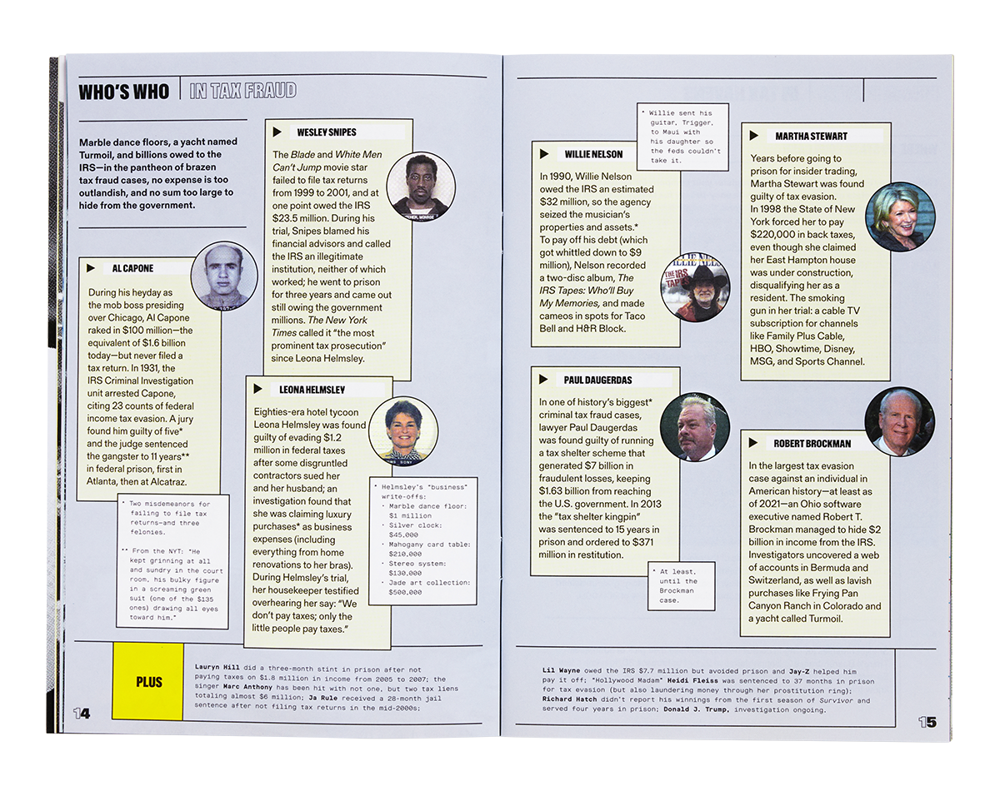
限制：公开网页和若干选页预览；本轮未取得整刊文件
- 实际看到什么
- 大标题下，多个人名、图像和短文按块排列；局部旁注以框和连线进入资料。
- 视觉机制
- 先认出主体，再读材料；并置不要求人物互相对话。
- 对应的真实内容与素材
- E-U08已有两段间接归纳，E-U04有三种主体解释；目前无肖像，也不需要假头像。
- 具体转译提案
- E-U08的Cynthia与Clark各保留原问题和分享场景，另列编辑解释。无肖像用姓名、角色、来源定位。E-U04的三个发言位置必须标编辑归纳。
- 版面与阅读关系
- 姓名、材料、出处保持相邻；两段同等尊重，不用块大小制造权威排名。旁注只解释对应条目。
- 字体、颜色与中文适配
- 借粗标题、规则正文、少量框线的层级。克制颜色可作为多彩页之间的停顿，不等于全刊单色。中文每块起止要清楚。
- 前后页关系提案
- 可接信任或选择的解释，再显示不同适用条件；不能下一页立即归纳为全场共识。
- 不适配与不能借用
- 不借原刊的负面人物分类和案件语气；归属仍待内容核验。
- 制作前缺项
- 人名、场次、使用许可与中文容量待核。
- 验收要看什么
- 每块有主体语境；编辑话语不用嘉宾引号；无伪对话、无合意暗示。
已看图／已配内容／待审说明
返回索引 ↑A24 Frenemies｜把读者操作写进页面
备选实验；只借可操作性，不借评分
A24 Zine Issue 19 · Frenemies
实际查看范围：印刷页20–21，完整跨页
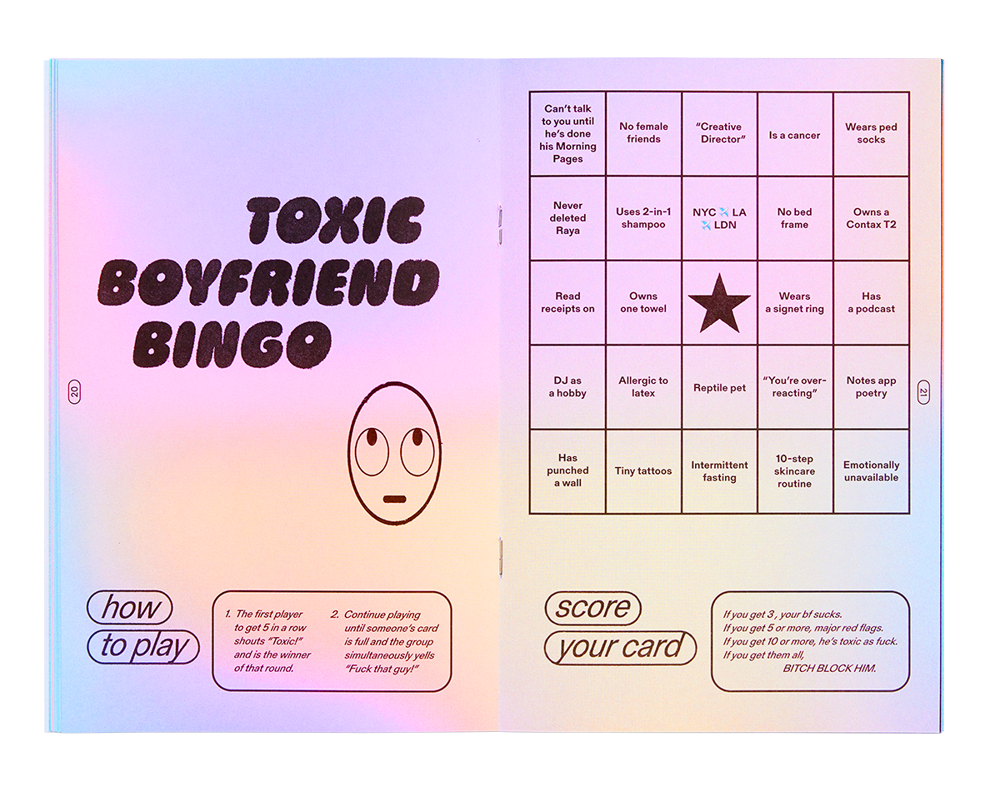
限制：公开网页和若干选页预览；本轮未取得整刊文件
- 实际看到什么
- 左页题目和玩法，右页5×5格及评分说明；浅粉紫底聚焦一个可操作对象。
- 视觉机制
- 把阅读变为识别与圈选；题目、操作和结果位于同一视野。
- 对应的真实内容与素材
- 已有六因子工作表；无评分阈值、读者测验或现场互动批准。
- 具体转译提案
- 若用户选择可书写功能，可把六因子改为六个证据提示并留填写区。改问目前有什么证据，不能复制宾果胜负或好坏评分。
- 版面与阅读关系
- 不用25格数量，只呈现来源支持的六项。不为凑格子补造19个条件。留白以真实书写需要为准。
- 字体、颜色与中文适配
- 可借浅底、黑字和边框；不搬反讽标签、星形奖励或复杂描边字。
- 前后页关系提案
- 只适合模型解释后的复看工具，不能以测试替代正文。
- 不适配与不能借用
- 不进入默认制作；原页的刻板印象和游戏判断与本刊无关。
- 制作前缺项
- 可填写功能是否需要、填写用途、纸张书写性均未定。
- 验收要看什么
- 六项均有据；没有分数或等级；不保证填写即可诊断。
已看图／有条件的功能提案／未批准
返回索引 ↑A24 Frenemies｜短问题与具体说明分工
邀请说明的局部参考，尚非完整收束依据
A24 Zine Issue 19 · Frenemies
实际查看范围：印刷页34–35，完整跨页；不是完整结尾序列
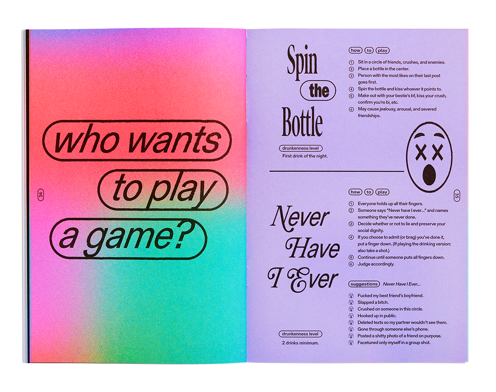
限制：公开网页和若干选页预览；本轮未取得整刊文件
- 实际看到什么
- 左页一句大问题形成停顿，右页分组写名称、步骤和条件；渐变横跨书脊。
- 视觉机制
- 左右承担不同阅读任务：先产生念头，再看如何开始。
- 对应的真实内容与素材
- 企划r313有贡献与内容确认机制，E-U09有收束文字候选；V1主题不进入V0。
- 具体转译提案
- E-U09借短邀请与贡献方式的分工；右页用企划支持的贡献、内容确认与真实承接入口，不能延用原游戏内容。
- 版面与阅读关系
- 三种开始方式来自编辑稿候选，每种明确能带来什么、如何开始。联系人未定保留缺项，不造二维码。
- 字体、颜色与中文适配
- 细描边中文易糊，需实样判断；步骤文字必须清楚，确认权不能缩成装饰。
- 前后页关系提案
- 从前文出现过的一种贡献形式过来，不能独立变成泛化招募广告。
- 不适配与不能借用
- 原页是游戏说明，未展示作品如何转向共同创作，因此只填ED-R07的操作层。
- 制作前缺项
- 最终邀请文字、真实入口、前页实际内容、完整结尾参考。
- 验收要看什么
- 贡献具体、入口真实；不承诺必定入刊、曝光或合作；不扩大为公开招募。
已看图／局部适配／结尾任务未关闭
返回索引 ↑play/GROUND 01｜同一提问下的多人网格
补采后备选；当前不作主入口
play/GROUND 第一期 · Social；报道中的中文／双语内页
实际查看范围：报道标14–15；实际看过一张跨页照片，细字未完整读出；非全刊
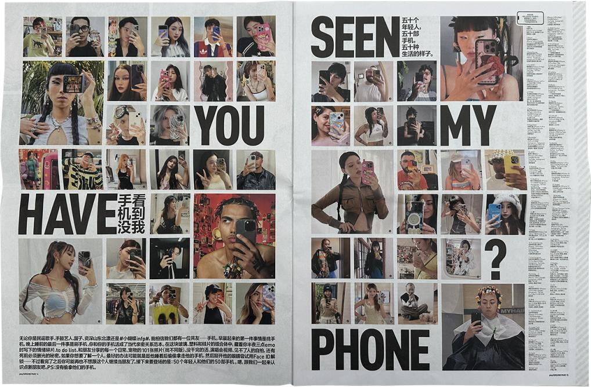
限制：局部、透视及分辨率限制；未能逐字读出全部内页
- 实际看到什么
- 手机自拍组成重复网格，粗大标题打断网格；人物与同一对象形成密集可比较的组合。
- 视觉机制
- 同一问法容纳不同回答，真实人和物承担版面丰富性。
- 对应的真实内容与素材
- 当前无自拍群像、同题问答与图片许可；分享文字只支持明确归属的编辑并置。
- 具体转译提案
- 启发以后同题回应页。当前仅有两段不同侧重的分享，不能伪装成几十人的同题调查。优先借重复字段，不借人数规模。
- 版面与阅读关系
- 两位分享者可改成两个有来源的文本单元，但这是大幅转译。完整群像须取得照片与同题回答后再审。
- 字体、颜色与中文适配
- 黑白标题穿插彩色小图；小于A4不能沿用同样格数缩印。双语密度另测。
- 前后页关系提案
- 补采后可作多人停顿；当前开场不得依赖它。
- 不适配与不能借用
- 照片是核心素材，不能当可删除的装饰。报道说的50人和六问题未逐格核对；大报纸比例不可直接迁移。
- 制作前缺项
- 人物原图、回答、许可和高清正视内页。
- 验收要看什么
- 每人每图每回答可追溯；不凑人；说明同题还是后期并置；小图信息可读。
已看图／关键素材缺失／不作当前制作依据
返回索引 ↑play/GROUND 01｜保留说话人的纸上讨论
真实多人回应的结构参考；禁用聊天伪装
play/GROUND 第一期 · Social
实际查看范围：报道将文章定位28–31；实际仅见一张跨页和参与者局部，不称四页均已看过
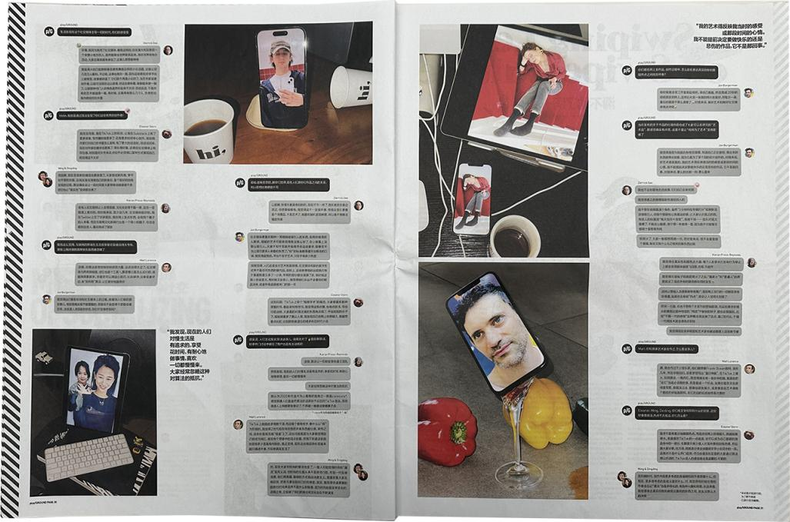
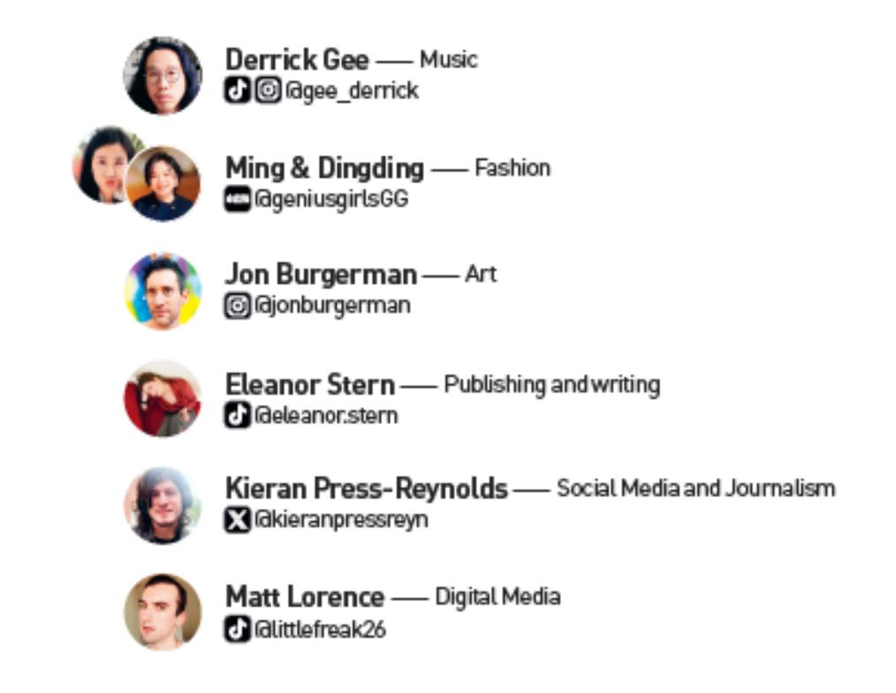
限制：局部、透视及分辨率限制；未能逐字读出全部内页
- 实际看到什么
- 聊天式短块贯穿跨页，身份与气泡相邻，并穿插物件图；另一局部列出参与者。
- 视觉机制
- 读者沿着回应跳读，同时辨认说话人。
- 对应的真实内容与素材
- 已有Founder Communication分享整理与E-U08两段归纳；无群聊原件、逐字录音、连续对答。
- 具体转译提案
- E-U08是分享整理，不是群聊原件，应保留人名与原问题，明确编辑并置。E-U04的创始人、记者、用户是概念位置，不做成真人发言截图。
- 版面与阅读关系
- 借短段、署名和问题锚点，去掉时间、已读、头像等伪界面。真实问答核验后才使用回应关系。
- 字体、颜色与中文适配
- 署名同时用文字与位置辨识，不只用颜色。窄气泡装不下完整论述时改普通段落，不靠减小字号。
- 前后页关系提案
- 方法之后并置不同经验；相邻不能制造反驳或共识。
- 不适配与不能借用
- 照片只能确认布局，不能读出全部对话；报道复述不能代替原文。聊天形式可能误导读者认为确实交谈过。
- 制作前缺项
- 若要真实对话需原始记录与授权；当前仅可借层级机制。
- 验收要看什么
- 原话、转述、编辑话语可分；未核逐字内容不加引号；无伪聊天时间和平台皮肤。
已看图／部分适配／待审转述形式
返回索引 ↑play/GROUND 01｜大标题旁的中文过程叙事
中文层级辅助；不足以确定正文规格
play/GROUND 第一期 · Social
实际查看范围：报道标6–7，但实拍仅为倾斜局部；不是完整跨页，细字未逐字核验
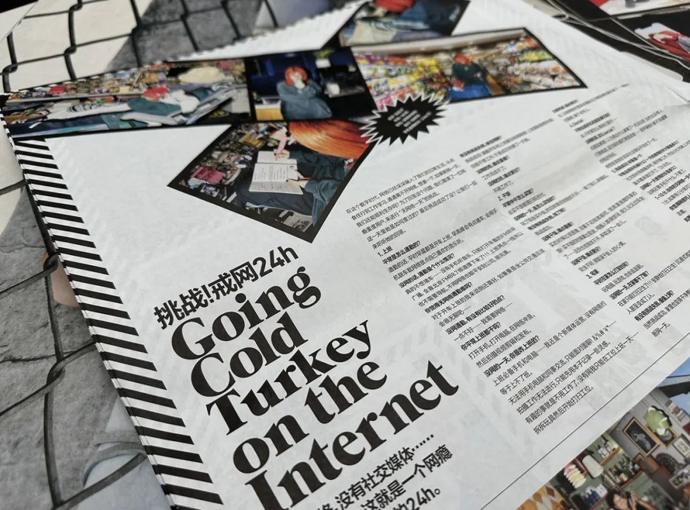
限制：局部、透视及分辨率限制；未能逐字读出全部内页
- 实际看到什么
- 英文大标题、中文标题与分段正文共存，小幅过程照片穿插。图片为倾斜局部实拍。
- 视觉机制
- 双语题目吸引注意，具体内容由中文段落和过程图推进。
- 对应的真实内容与素材
- E-U06、E-U07有团队讲述文字；真实用户作品和过程图未取得。
- 具体转译提案
- E-U07的用户反馈如何改变内容可用过程短篇，但图必须真实。无图时只借分段与小标题，不从参考借人物、手机或工作照片。
- 版面与阅读关系
- 时间顺序须有来源；无时间证据用问题、判断、行动作阅读位置，不伪造时间线。无图时标缺或采用另经用户确认的文字短篇。
- 字体、颜色与中文适配
- 确有中文排版，但透视及清晰度不足，不能推出精确字号、行距、栏宽和印刷可读性。
- 前后页关系提案
- 适合方法解释后的短案例，不足以单独担任全刊开场。
- 不适配与不能借用
- 英文标题不能证明中文长文可读；大报纸缩小会改变行长和密度。
- 制作前缺项
- 高清正视中文跨页与连续页、真实过程图。ED-R02仍未关闭。
- 验收要看什么
- 中文在最终尺寸可读；双语不冲突；图和文存在真实关系。
已看局部／中文辅助／高清长文仍缺
返回索引 ↑Eye on Design 02｜文字与图形共同进入文章
可优先讨论：无摄影的章节入口
Eye on Design #2 · Psych!
实际查看范围：可见右页33；面对页32为配对推定；单个开篇跨页
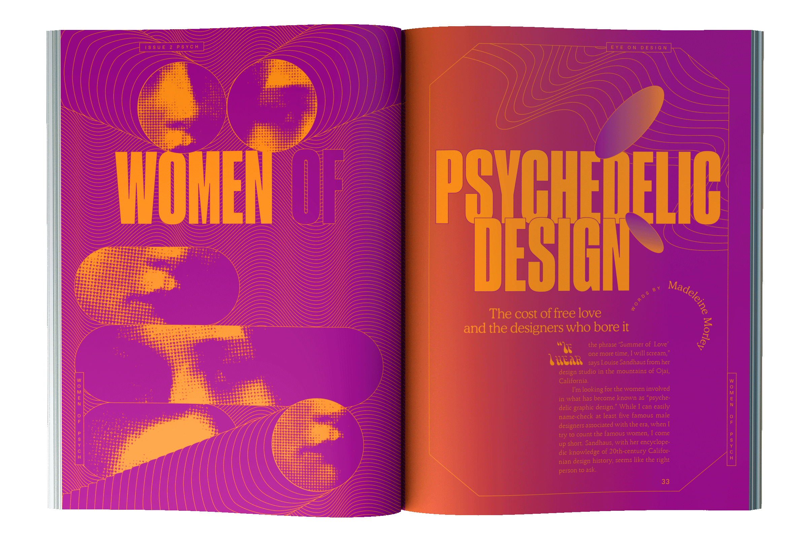
限制：公开网页和若干选页预览；本轮未取得整刊文件
- 实际看到什么
- 紫橙图形包围标题并跨过书脊，右下留下导语区。标题并非与正文分离的封面。
- 视觉机制
- 标题、图形、导语共同给出继续阅读的理由。
- 对应的真实内容与素材
- 五种选择与三个发言位置均有编辑文字候选；可由原生文字和几何形状表达，无照片依赖。
- 具体转译提案
- E-U03五种选择形成同时可见的文字场；E-U04三个主体分别成组。图形应表达并列选择或视角差异，不直接搬迷幻图案。
- 版面与阅读关系
- 保留强标题与导语的尺度差，导语提出具体问题。五项选择同权，无先后箭头；实际分页待定。
- 字体、颜色与中文适配
- 深底与亮色是参考观察，橙紫不自动成为本刊主色。汉字需独立字形策略，不机械压窄。
- 前后页关系提案
- 后文必须兑现标题的问题，不能转普通机构介绍或旧的第0刊身份宣告。
- 不适配与不能借用
- 图案属于原刊迷幻设计主题，只有构图原则可借；不同开场互斥，不据看图替用户选路线。
- 制作前缺项
- 最终开场方向、文字与全刊字体颜色；目标尺寸字形验证。
- 验收要看什么
- 去装饰后仍有具体阅读意义；标题图形导语一致；英文不能遮蔽中文语义。
已看图／已配开场候选／待路线审阅
返回索引 ↑Eye on Design 02｜长访谈的六个相邻跨页
长文节奏主参考；摄影部分当前不可照用
Eye on Design #2 · Psych! · Cat Frazier文章
实际查看范围：按页码重排为100–111的六个相邻跨页；100/102/103/104/105/106/109/110/111可见，101/107/108据面对关系推定。非全刊
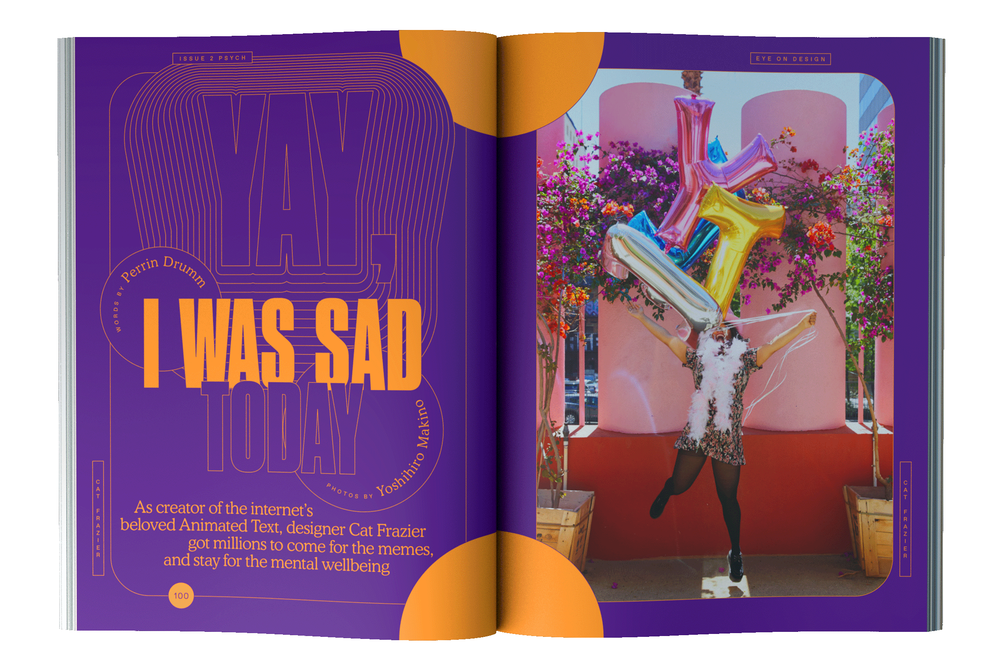
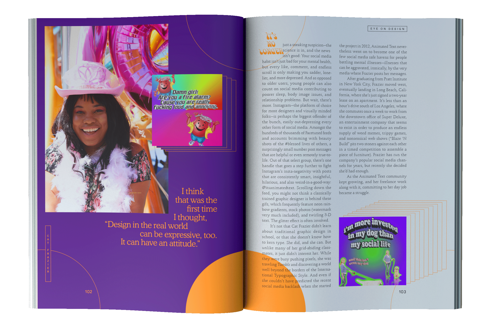
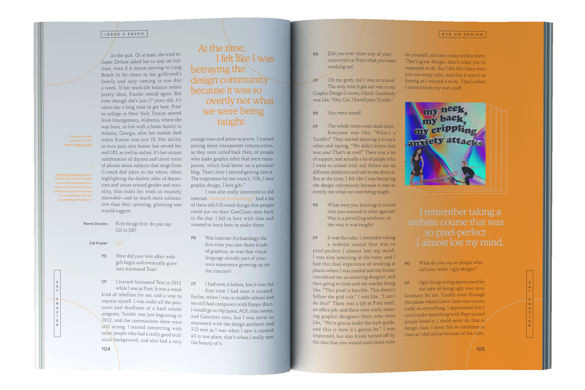
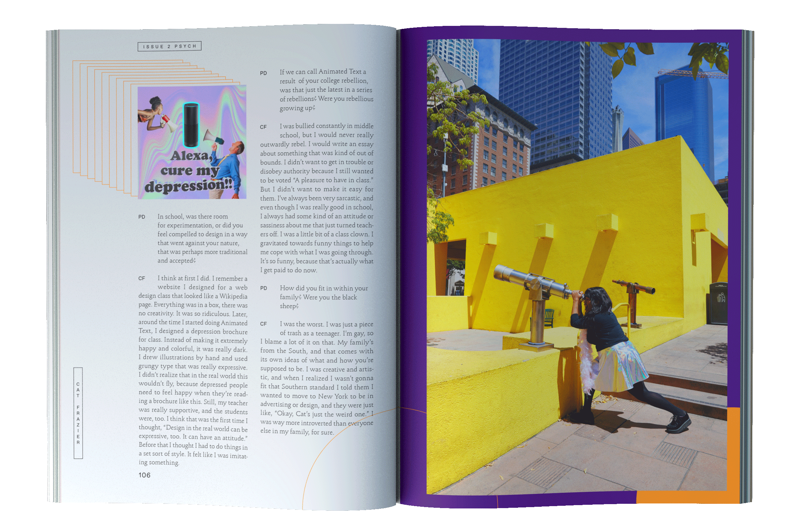
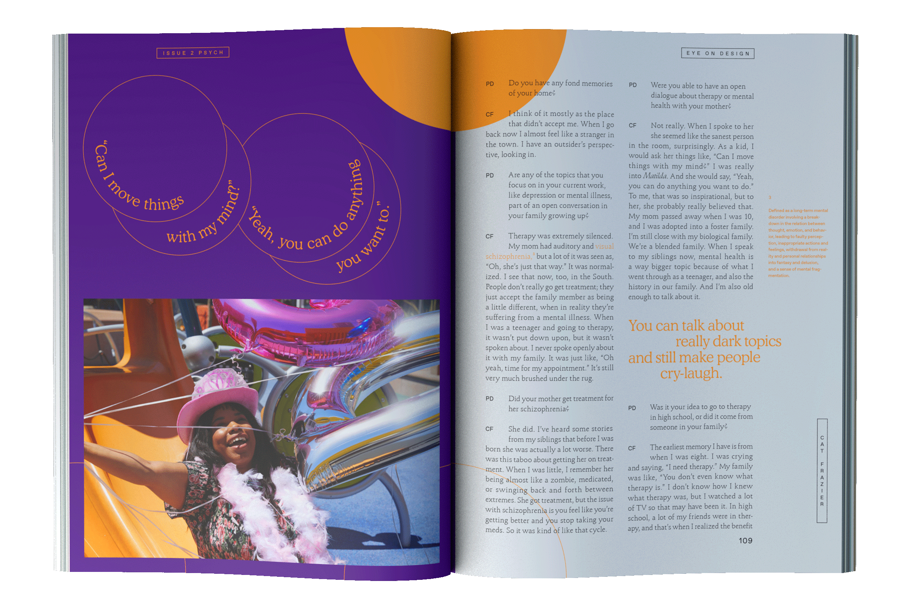
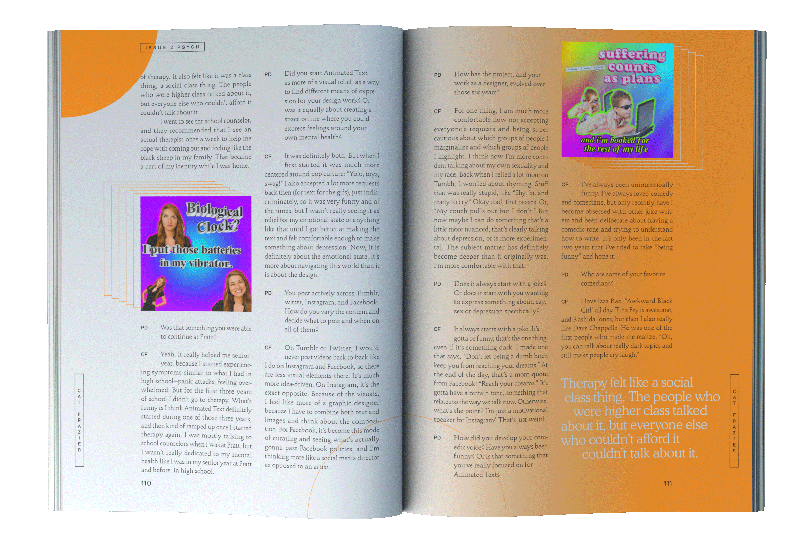
限制：公开网页和若干选页预览；本轮未取得整刊文件
- 实际看到什么
- 同篇内彩底、照片、浅底问答、大引语与作品图交替；问答有固定身份标识，跨页并不套同一模板。
- 视觉机制
- 稳定正文骨架维持连续阅读，强图与引语改变速度；完整论述仍然存在。
- 对应的真实内容与素材
- content/FounderCommunication_完整编辑基础稿.md有完整中文论述；无人物肖像、作品原图、逐字访谈。
- 具体转译提案
- E-U02按自己的判断、媒体选题、事实与角度、日常实践组织。基础稿是转述文章，不能改为假问答。使用编辑小标题和摘意，不造肖像、帖子或嘉宾台词。
- 版面与阅读关系
- 借六跨页的疏密交替，不把六跨页当本刊页数配额。无照片优先借104–105及110–111文字层级；其余摄影节奏仅作缺项对照。
- 字体、颜色与中文适配
- 彩底作转场，正文在较平静底色；姓名与提问有稳定识别。中文不复制英文多栏字数，限制与正文同样可读。
- 前后页关系提案
- 复杂关系图之后可进入连续论述；结束留具体内容再转邀请，不只截口号。
- 不适配与不能借用
- 照片与作品是原文内容。文字替代只称局部机制转译，不能宣称复刻完成。未审全刊或英文全部事实。
- 制作前缺项
- 中文长文高清实刊／样张；最终删并；若要摄影节奏须取得真实材料。
- 验收要看什么
- 主论证可连续阅读；归属准确；转述不伪问答；大字不删掉论证，假素材不填缺口。
已看连续页段／已配长文／待中文验证
返回索引 ↑Eye on Design 02｜正文与强摘意共存
没有人物图时的正文辅助参考
Eye on Design #2 · Psych! · Tuning in相关文章
实际查看范围：本卡仅纳入印刷页124–127的两个相邻跨页；另有已下载的后续预览未纳入本卡，未核完整文章，非全刊
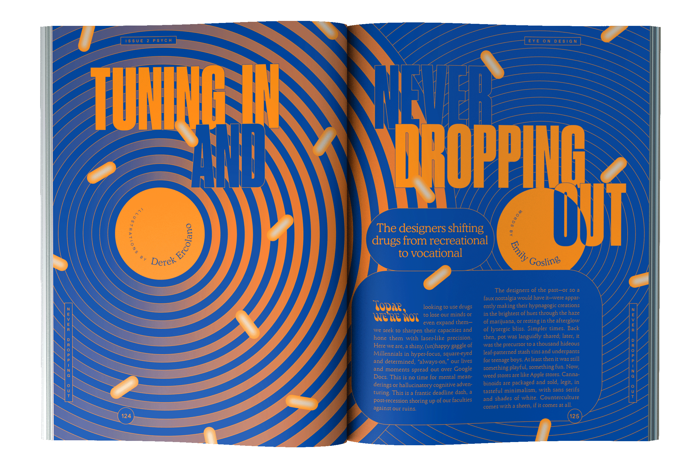
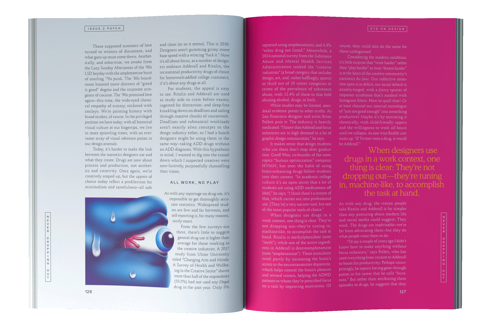
限制：公开网页和若干选页预览；本轮未取得整刊文件
- 实际看到什么
- 124–125图形化开篇；126–127转为多栏正文和大摘句，亮色局部与正文并存。
- 视觉机制
- 主句提供快速入口，完整论述在同一阅读单元保留。
- 对应的真实内容与素材
- 两篇基础稿均有主句与边界；不依赖摄影。
- 具体转译提案
- E-U02以自己的说明与外部判断形成编辑主句，E-U01把乘号不能用于算分与定义同场呈现。摘意不是嘉宾原话，按编辑小标题处理。
- 版面与阅读关系
- 保留主文和摘意的关系，不搬英文多栏。较短中文编辑句给论述与边界让出空间。
- 字体、颜色与中文适配
- 不能只凭颜色传达意义；明度与清晰度需目标尺寸验证。原页药物、眼睛图形属于其主题，不进入本刊。
- 前后页关系提案
- 可作长文中段的速度变化，前后仍用同一术语。
- 不适配与不能借用
- 只看两个相邻跨页；不采用原文的健康或药物观点。
- 制作前缺项
- 摘意与正文逐句对应、中文行长、全刊色彩规则。
- 验收要看什么
- 摘意不扩大原意；只看大字不会误解；正文不成不可读灰块；限制不拆散。
已看连续局部／已配内容／待中文验证
返回索引 ↑Weapons of Reason 02｜分支系统与正文同场
模型非线性语义的优先结构参考
Weapons of Reason #2 · Megacities
实际查看范围：可见印刷页104–105，完整跨页预览；低分辨率，非全刊
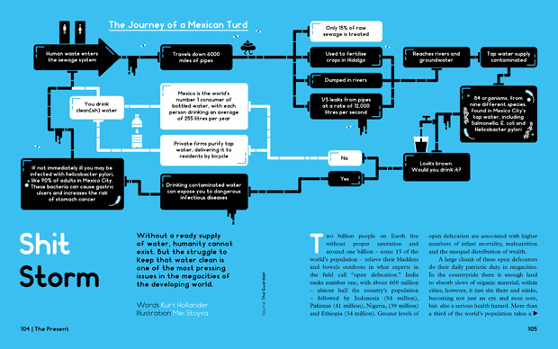
限制：主要示例只有620px宽，不能验证印刷尺寸的细字
- 实际看到什么
- 上半部用管线式路径连接多个节点及分支，下半部保留标题、导语与解释正文；蓝底、黑白信息块。
- 视觉机制
- 先给系统关系，再提供可以继续读的解释；分支和返回存在于同一视野。
- 对应的真实内容与素材
- E-U01的三结果、六因子与工作表已有文字，不需要人物图或数值。
- 具体转译提案
- E-U01可借“关系图＋解释文”的共存。图中只呈现正文支持的采用、案例、口碑及再进入市场的关系，不为了像管道系统增加分支。三结果不是供读者逐级通关的节点。
- 版面与阅读关系
- 图文分区约为上下两大部分，这是目测而非精确测量；中文关系标签与正文分别组织。当前不决定图文比例及页数。箭头的含义必须写清，不能把阐释画成可计算因果。
- 字体、颜色与中文适配
- 参考蓝、黑、白有明显功能分工；中文必须靠标签识别，不能只凭颜色。620×388预览只够看结构，不作印刷资产。
- 前后页关系提案
- 可先问症状，再给总览，后接文字工作表；不据此确定全刊顺序。
- 不适配与不能借用
- 原图是污水循环的具体系统，拥有自己的流程事实；它不能证明增长关系。这里只借系统图和论述共存的机制。
- 制作前缺项
- 逐线语义核对、中文高清样张、原图更高清版本；本轮不由参考自动确定循环形式。
- 验收要看什么
- 每条路径有已审正文支持；不新增因果或数据；不把三结果变成固定阶段；正文与限制在成品尺寸可读。
已看图／已配语义／待审结构
返回索引 ↑